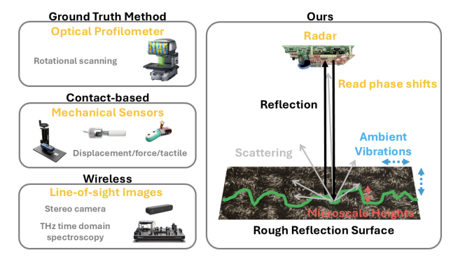

Project mmTextora: Surface Material and Roughness Sensing using mmWave via Surface Scattering and Ambient Vibrations

In this paper, we explore a system to sense the roughness of surfaces, even if obstructed from field-of-view. We pose this question in the context of robotic grasping to explore if robots can learn the texture of objects prior to grasping them. Importantly, we seek to do so in a completely contact-free fashion (ruling out tactile sensors), despite obstructions (ruling out cameras and lidar). We present mmTexora, a novel texture sensing system using mmWave radar. mmTexora leverages ambient vibrations that produce temporal phase variations to objects in everyday environments, when perceived by radar. Uniquely, we show how these phase variations carry valuable information on the structure of bumps and ridges on a surface, revealing information on surface texture. We then develop a signal processing and deep learning pipeline that extracts surface texture from phase variations, despite signal noise and multipath. We perform the experiments in multiple scenes on 50 textured surfaces made of different materials and roughness. Our classification model reveals an average surface classification accuracy 93.7% on 50 surfaces; we achieved an average absolute error on roughness measurements of 0.11 mm across 50 textures.
Citation
- Surface Material and Roughness Sensing using mmWave via Surface Scattering and Ambient Vibrations, Yawen Liu, Bert Shan and Swarun Kumar, SenSys 2026